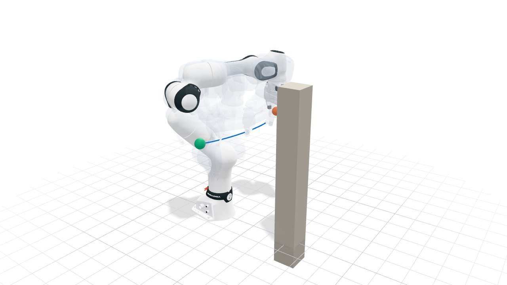

Quickstart#
On this page, we plan a first motion for a Franka Panda. The arm swings from one side of a post to the other, and geodex returns a collision-free path that is short under the arm’s kinetic energy. Planning needs the Linux or macOS wheel (see Installation).

The finished plan. The blue curve traces the grasp point between the fingers from the start (green) to the goal (orange). Drag to orbit, and use the controls to pause the arm or move it along the path.
The full script is examples/getting_started/quickstart.py, and the C++ version is
examples/getting_started/quickstart.cpp.
1. Load the robot#
geodex.robots.Panda() is the arm’s configuration space, its seven joint angles within
their limits. Its metric is the arm’s kinetic energy, built from the Panda’s mass matrix.
import numpy as np
import geodex
robot = geodex.robots.Panda() # seven joints, the kinetic-energy metric
print(robot.name(), "joints:", robot.dim())
Full example: examples/getting_started/quickstart.py
#include <cstdio>
#include <geodex/integration/vamp/registry.hpp>
#include <geodex/robots/planning.hpp>
namespace gr = geodex::robots;
namespace gv = geodex::integration::vamp;
namespace gp = geodex::planning;
int main(int argc, char** argv) {
constexpr auto R = gr::Robot::Panda; // seven joints, the kinetic-energy metric
std::printf("%s joints: %d\n", gr::name(R).data(), gr::MassMatrix<R>::Nq);
Full example: examples/getting_started/quickstart.cpp
It prints panda joints: 7.
2. Build the scene#
A Scene holds the obstacles. Here, it is a post in front of the arm, a box with side lengths
of 10 cm, 10 cm and 80 cm.
scene = geodex.Scene()
scene.add_box(position=[0.4, 0.0, 0.3], size=[0.1, 0.1, 0.8]) # a post in front
Full example: examples/getting_started/quickstart.py
auto builder = gv::make_scene_builder();
gv::scene_add_box(builder, {0.4, 0.0, 0.3}, {0.1, 0.1, 0.8}, // a post in front
Eigen::Quaterniond::Identity());
const auto scene = gv::build_scene(builder);
Full example: examples/getting_started/quickstart.cpp
3. Plan the motion#
The start and the goal differ only in the first joint, the one at the base. The straight line
between them in joint space would swing the arm through the post. plan checks every
configuration and every edge against the scene with VAMP, a collision checker that tests the
arm’s collision spheres. PlanSettings(iterations=1500, seed=1) gives the planner 1500
iterations and a fixed seed. Run the script again and you get the same path.
start = np.array([-1.1, -0.785, 0.0, -2.356, 0.0, 1.571, 0.785])
goal = np.array([1.1, -0.785, 0.0, -2.356, 0.0, 1.571, 0.785])
settings = geodex.PlanSettings(iterations=1500, seed=1)
result = geodex.plan(robot, start, goal, scene, settings=settings)
print(f"solved={result.solved} cost={result.cost:.4f} waypoints={len(result.path)}")
Full example: examples/getting_started/quickstart.py
Eigen::VectorXd start(7), goal(7);
start << -1.1, -0.785, 0.0, -2.356, 0.0, 1.571, 0.785;
goal << 1.1, -0.785, 0.0, -2.356, 0.0, 1.571, 0.785;
gp::PlanSettings settings;
settings.iterations = 1500;
settings.seed = 1;
const auto result = gr::plan<R>(start, goal, scene, settings);
std::printf("solved=%d cost=%.4f waypoints=%zu\n", result.solved, result.cost,
result.path.size());
Full example: examples/getting_started/quickstart.cpp
It prints solved=True cost=1.5543 waypoints=105.
4. Read the result#
result.path is an array of joint configurations, one row per waypoint, joined by straight
lines in joint space. result.cost is its length under the kinetic-energy metric, and
result.raw_path holds the planner’s waypoints before the smoother shortened them.
rows, cols = result.path.shape # one row per waypoint, one column per joint
raw_rows, raw_cols = result.raw_path.shape
print(f"path: {rows} x {cols}, raw path: {raw_rows} x {raw_cols}")
Full example: examples/getting_started/quickstart.py
std::printf("path: %zu x %ld, raw path: %zu x %ld\n", result.path.size(),
result.path[0].size(), result.raw_path.size(),
result.raw_path[0].size());
Full example: examples/getting_started/quickstart.cpp
It prints path: 105 x 7, raw path: 5 x 7.
5. Try it: plan with the Euclidean metric#
Pass metric="euclidean" and plan again. The Euclidean metric measures a motion by the joint
angles alone.
euclidean = geodex.robots.Panda(metric="euclidean")
other = geodex.plan(euclidean, start, goal, scene, settings=settings)
for name, r in (("kinetic energy", result), ("euclidean", other)):
turned = np.linalg.norm(np.diff(r.path, axis=0), axis=1).sum()
print(f"{name}: the joints turn {turned:.3f} rad in total")
Full example: examples/getting_started/quickstart.py
gr::RobotPlanOptions options;
options.metric = gr::ArmMetric::Euclidean;
const auto other = gr::plan<R>(start, goal, scene, settings, options);
for (const auto* r : {&result, &other}) {
double turned = 0.0;
for (std::size_t i = 0; i + 1 < r->path.size(); ++i) {
turned += (r->path[i + 1] - r->path[i]).norm();
}
std::printf("%s: the joints turn %.3f rad in total\n",
r == &result ? "kinetic energy" : "euclidean", turned);
}
return 0;
}
Full example: examples/getting_started/quickstart.cpp
It prints
kinetic energy: the joints turn 2.396 rad in total
euclidean: the joints turn 2.205 rad in total
The Euclidean path turns the joints less in total. See Manipulation for an FR3 arm planned under each metric, with each path measured in joint space and under the kinetic-energy metric.
Where to go next#
geodex.robots.available()lists every built-in robot, and the same calls plan for each. See Robot Guides for a guide per robot.Metrics as Robot Models covers the kinetic-energy metric and the other metrics geodex provides.
Planning and Path Smoothing cover the planner and the smoother.
Reproducibility covers seeds and budgets.
pixi run quickstartruns this example in a checkout of the repository. Seeexamples/README.mdfor the other examples.